Watch the animation, say the word, then do the action with your body. Moving while you say a word helps you remember it. Tap 🔊 to hear the word.
Unit 1 An Accidental Breakthrough 12 words
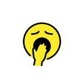
LethargicخاملDroop your shoulders and yawn slowly.After days without proper sleep, the exhausted Chinese emperor felt extremely Lethargic.
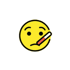
Ailingعليل / مريضShiver and hold your forehead like you have a fever.The royal doctor arrived at court to examine the Ailing sovereign.Glanceنظرة خاطفةLook quickly to the side, then back.Shennong cast a curious Glance toward the cauldron boiling over the open fire.
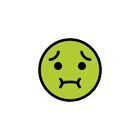
Unpalatableكريه المذاقTaste something yucky and shake your head.The court physician prepared a bitter herbal medicine that was completely Unpalatable.
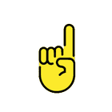
InsistedأصرّWag your finger firmly: “Yes, you must!”The royal doctor Insisted that the emperor drink the bitter concoction to regain his health.
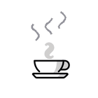
Aromaرائحة زكيةSniff the steam from a warm cup: “Mmm!”As the wild leaves steeped in boiling water, a rich, soothing Aroma filled the air.
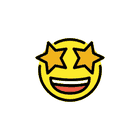
FantasticرائعOpen your eyes wide: “Wow, amazing!”The accidentally brewed golden liquid tasted absolutely Fantastic and refreshed the king.
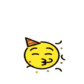
ExhilarationابتهاجJump up with joy!After drinking the warm liquid, a surge of renewed energy and Exhilaration washed over his body.
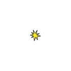
ImpactتأثيرClap your hands together hard: BOOM!The global spread of tea had a profound social Impact across different continents.
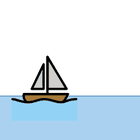
DistantبعيدPoint far away and make your voice small.Traders transported tea leaves from remote Chinese mountain slopes to Distant foreign markets.
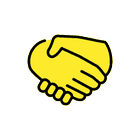
ConcordوئامShake hands with a friend.Sharing a warm cup of tea encouraged peaceful conversation and social Concord.
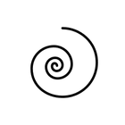
BlendمزيجStir in a big circle to mix.Master tea artisans carefully created a unique herbal Blend to suit every palate.
Unit 3 Colors of the World 10 words
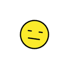
MonotonousرتيبTick left, right, left, right… the same, again and again.Writing endless financial numbers in ledgers felt extremely Monotonous to the young poet.
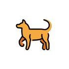
CouchedرابضLie down slowly and rest, like a sleepy dog.The loyal watchdog slumbered safely, Couched like a log inside his wooden kennel.Scamperingيركض مسرعًاRun on tiptoe with tiny, quick steps.A tiny gray rodent went Scampering across the cold stone floor.
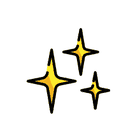
Gleamبريق / لمعانTwinkle your fingers like shining light.The tranquil stream reflected a silvery Gleam as it flowed past the sleeping trees.
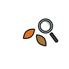
Peersيُحدِّق بعنايةLean in close and look very carefully.The curious cat Peers through the window at the birds outside.
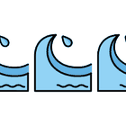
Flowingمتدفِّق / منسابMove your hands smoothly like a river.Her long hair was Flowing in the gentle breeze.
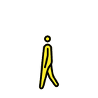
WithdrewانسحبStep back and walk away.The shy boy Withdrew to a quiet corner of the room.
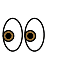
Peepيختلس النظرCover your eyes, then peek through your fingers.The little mouse likes to Peep out of its hole to see if the cat is gone.
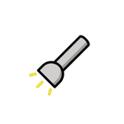
Beamشعاع ضوءHold up a pretend torch and shine it around.A silver Beam of moonlight shone through the window.
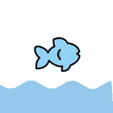
Beneathتحت / أسفلDuck down low, under a pretend table.The fish swam silently Beneath the water.
Unit 4 Cooperation and Teamwork 6 words
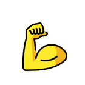
Relentlesslyبإصرار دون توقُّفPump your arm again and again, never stopping.The team practised Relentlessly until they won the final match.
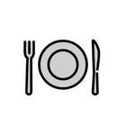
Starvingيتضوّر جوعًاRub your tummy and look at your empty plate.After the long hike, the children were Starving and ate everything.
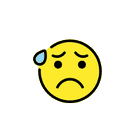
Nervousمتوتِّر / قلِقTremble and bite your lip.Sara felt Nervous before giving her speech to the class.FerociousشَرِسRoar like a fierce lion!The Ferocious lion roared loudly across the hills.
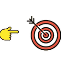
Deliberatelyعَمْدًا / عن قصدPoint slowly and carefully, on purpose.He Deliberately left the gate open so the dog could come inside.Brilliantذكيّ جدًاTap your head: “I have a great idea!”The Brilliant rabbit thought of a clever plan to help her friends.
Unit 5 The Changing Seasons 8 words
RustledخَشْخَشShake your hands softly: swish, swish.The dry leaves Rustled as the wind blew through the trees.
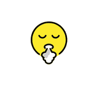
SighتَنْهِيدةBreathe in, then let out a long “haaa”.She let out a long Sigh of relief when the test was over.SwayedتمايَلSway your body side to side like a tree.The tall trees Swayed in the strong autumn wind.
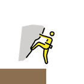
Precariousمحفوف بالمخاطرWobble on one foot at the edge.The little leaf hung in a Precarious spot at the very end of the twig.Farawayبعيد جدًاShade your eyes and look far, far away.The little leaf dreamed of Faraway places across the sea.
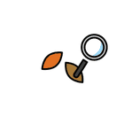
ObservedلاحَظWatch something very carefully without moving.The leaf Observed that the branches had changed their colors.
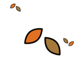
Separatedانفصل / فَصَلHold hands with a friend, then let go and step apart.The leaf Separated from the twig and flew away with the wind.
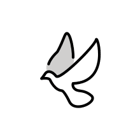
Symbolizedرَمَزَ إلىMake a heart with your hands: it stands for love.For the little leaf, the golden color Symbolized joy and peace.
Unit 6 Family Relations and Filial Piety 2 words
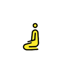
StoopingينحنيBend down low to pick something up.The old man was Stooping to pick up the fallen apples.Roverرحّالة / مسافرPut on a pretend backpack and march along.The Rover walked from town to town with a small bag on his back.
Unit 7 Overcoming Challenges 4 words
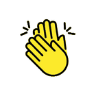
Admireيُعجَب بـ / يحترمClap for someone and say “Well done!”I Admire my grandmother for her kindness and patience.
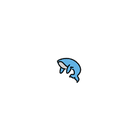
Giganticضخم جدًاStretch your arms as wide and tall as you can.A Gigantic whale swam beside the small boat.
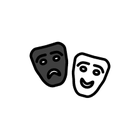
PretendedتظاهَرClose your eyes and fake a snore.Ali Pretended to be asleep when his mum came into the room.
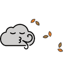
Gustهبّة ريحPuff out your cheeks and blow hard like the wind.A Gust of wind blew my hat right off my head.
Unit 8 Build Up or Tear Down 5 words
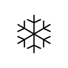
Uniqueفريد من نوعهDraw a snowflake in the air; no two are the same.Every snowflake has a Unique shape.
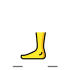
Stompedدَبّ بقوّةStamp your feet heavily: thump, thump!The angry giant Stomped across the bridge.
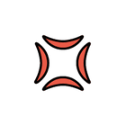
Clashingيتعارضان / يتشاجرانBump fists like two goats butting heads.The two friends kept Clashing over whose idea was better.Paceسرعة / وتيرةRun on the spot, steady and fast.The runners kept a steady Pace around the track.
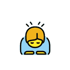
ApologizeيعتذرBow your head and say “I’m sorry.”Sam went to Apologize to his sister for breaking her toy.
Unit 9 Silly Tales 1 words
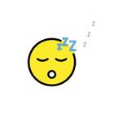
DozedغفاLet your head nod forward as you fall asleep.Grandpa Dozed in his armchair after lunch.
Unit 10 Love Animals 4 words
Spunkyجريء ومفعم بالحيويةBounce around like an excited puppy.The Spunky little puppy chased the big ball across the yard.
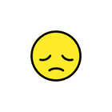
Depressedحزين / مكتئبHang your head and look sad.Omar felt Depressed when his best friend moved away.
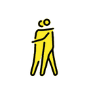
EmpathyالتعاطفGive a friend a gentle hug.Showing Empathy means imagining how someone else feels.
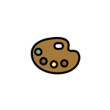
InspiredأُلهِمPoint up with a big “Aha!” and start painting.The beautiful sunset Inspired her to paint a picture.
Unit 12 Earth Day 2 words
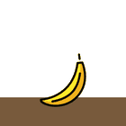
DecomposeيتحلَّلSlowly melt down to the floor like an old leaf.Leaves and fruit peels Decompose and turn into soil.Estimateيُقدِّر / يُخمِّنRub your chin and guess a number.Can you Estimate how many sweets are in the jar?
Unit 13 Love for Nature 3 words
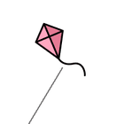
Tossيرمي / يقذفThrow a pretend ball up high.The wind likes to Toss the kites high in the sky.Delightedمسرور جدًاClap and smile your biggest smile.The children were Delighted when it started to snow.
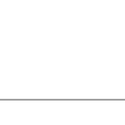
Relocatedانتقل / نُقِلPick up a pretend box and carry it to a new spot.Our family Relocated to a new city last summer.
Unit 14 Connecting People 15 words
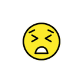
FrustratedمُحبَطScrunch your face and shake your fists: “Argh!”Grandpa felt Frustrated when he couldn’t send a message on his phone.
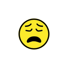
Exhaustionإرهاق شديدFlop down like you have no energy left.After the long exam, Reem felt complete Exhaustion.
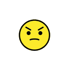
AnnoyيُزعِجCross your arms and frown.My little brother likes to Annoy me when I’m reading.
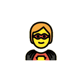
HeroicبطوليّStand tall with your hands on your hips like a hero.The firefighter made a Heroic rescue.
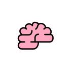
SmartذكيّTap your head and smile.Our Smart parrot can say ten words.Connectيربط / يُوصِلLink your fingers together like a chain.Please Connect the two pieces of the puzzle.Createيبتكر / يصنعPretend to hammer and build something new.Let’s Create a poster for Earth Day.RescueيُنقِذReach out your arm to pull a friend to safety.The lifeguard swam out to Rescue the swimmer.LaunchيُطلِقCrouch down, count 3-2-1, and blast off!They will Launch the rocket at sunrise.Watchيُشاهِد / يُراقِبMake binoculars with your hands and look.We Watch the birds from our window.FortunateمحظوظCross your fingers and cheer.We were Fortunate to find a seat on the busy bus.Enormousهائل / ضخمStomp like a huge elephant with a long trunk.An Enormous elephant walked past our jeep.SilentصامتPut a finger to your lips: “Shh!”The library was completely Silent.ElegantأنيقGlide gracefully on your tiptoes like a swan.The swan looked Elegant as it glided across the lake.PurchaseيشتريPush a pretend shopping cart and pay at the till.Dad will Purchase new school shoes for me.
Unit 15 World Food Day 3 words
Intriguingمثير للاهتمامHold a pretend magnifying glass and search.The detective found an Intriguing clue under the table.Craveيشتهي بشدّةLick your lips and reach for an ice cream.On hot days, I Crave an ice-cold popsicle.CuriosityالفضولTilt your head and ask “Why? How?”Her Curiosity made her ask lots of questions.